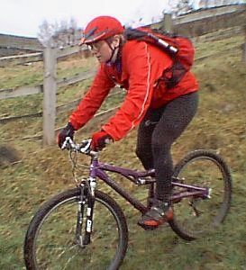

More bike articlesThis is a long article about riding in very cold (like freezing or below) weather.
The first thing I should say is: the most important thing is to keep all parts of your body warm. Usually when we're outside, we put on a thick jacket, maybe a hat, and we can either put on gloves or put our hands in our pockets, and we're fine for walking to classes or work. We don't worry about our legs or face, and our regular shoes are usually fine for our feet. When you go out riding, you find three things: (1) what you wear on your chest (the thick jacket) is too heavy, and you end up sweating like crazy, (2) what you wear on the rest of body is insufficient, and (3) since you're really exposed to the air, keeping the wind off you becomes very important.
What you need to aim for is a more-or-less uniform covering of yourself, top to bottom. You should have about the same thickness of stuff on you all over.
Materials: you basically need two types of fabrics. The first type of stuff is for warmth, the second to block the wind. For warmth, use polypro or any one of its cousins (thermax, caprilene, etc), polyester fleece, or wool. Silk used to be the thing, but I think that wool is warmer, and artificial fibers wick better, and silk is expensive. But if you have it already, you can use it. Cotton is not good. It soaks up water, stops insulating, and starts to feel really disgusting. To keep the wind off you, simple non-stretchy nylon is all you need. You can get fancier fabrics (Gore-Tex, Silmond microfiber, etc), but the only real difference is weight of fabic and water-restistance. It all works pretty much the same for protecting you from wind.
So, starting at the top, here are my specific recommendations.
 Me on a warm day in early December: Gore-Tex helmet cover (not cold enough for hood), Activent jacket with pit zips, long-fingered gloves, padded tights, Shimano winter boots. Head: One fellow I know phrased it this way: "no balaclava, no ride". A balaclava is a piece of stretchy fabric that goes over your head, with a big hole for your face. It covers your neck, chin, and the sides, back, and top of head. If you want, you can pull it over your mouth as well. You may want even more than a balaclava. I have a Gore-Tex helmet cover. It stretches over your helmet and blocks the wind from blowing through your vents, thus holding in whatever heat escapes from your balaclava. The nice thing about the helmet cover is that it's another layer you can add that doesn't have to be crammed under your helmet. The helmet cover (about $15) is not essential; I was out riding in below freezing weather before I got it, but it does help. The balaclava is essential for weather much below freezing.
However, I haven't actually used my balaclava since moving to the UK. Instead I have some bike jerseys that have thin hoods attached. The hoods cover my neck and my entire head. They are thin enough to fit under a helmet without fiddling with the pads, and the fact that they are attached to my jersey means that they don't move around, and if it warms up I can just push it off without worrying about putting it into a pocket. These jerseys come from Performance and are about the only jerseys I wear in winter. I still use a Gore-Tex helemt cover pretty much non-stop from October to April.
Eyes: They will dry out extremely fast if you don't wear something over them. If you wear glasses this is often enough, but if it's very windy or you're descending alot, the wind can make your eyes water and make it difficult to see where you're going. Consider cycle-specific glasses. If you don't wear glasses, make sure you put something on your eyes. If you don't like sunglasses, get something clear.
Upper Body: lots of thin warm layers, with wind protection on top. I find that I generally need a bit more on my torso than on my arms. If you have a fleece vest this comes in handy as one of the layers. Or wear a wicking T-shirt or short-sleeve jersey as your base layer. You need a layer of windproof nylon on your chest (at least). This can come in the form of a vest, a cycling jacket with nylon on the front and insulating material elsewhere (a very useful cold-weather riding accessory), or a plain nylon jacket. There's no need to go for the multi-bucks approach here.
A very useful feature on a jacket for cold weather riding is pit zips. These allow you to adjust the amount of wind cooling you get, preventing you from overheating when you're working hard, but allowing you to keep out all drafts when you're not working so hard or it cools off in the evenings. My favorite fabric for cold-weather riding is Activent. It transmits moisture well, is semi-waterproof, completely windproof, and very light. I used to wear Gore-Tex alot for riding, but I find it too heavy and hot for winter riding in Britain.
Hands: warm windproof gloves. They don't have to be special cycling gloves. I have super-thick REI Gore-Tex ski gloves for extremely cold weather. As long as I keep moving, my hands don't get cold. However, they can get too warm and sweaty, so it's useful to have a range of thicknesses of gloves so you can select the gloves appropriate for the temperature.
Legs: again, several warm layers. If it's really cold (significantly below freezing) you'll want wind protection on top. You can get tights that have a wind-stopping layer in front, and these are great. If you don't have this, nylon pants over a couple pairs of tights are fine.
One item of clothing I've found very useful for winter riding are long tights with pads in them. This prevents the buildup of layers around your bum and belly, which some people (like me) find binding. I have several pairs of Performance polypro tights with pads. They are mid-weight, have a brushed inside and a good quality pad, and are very comfy. Now when I go out for winter riding, my only thoughts are: is it warm enough to wear my padded tights alone, or do I put a thin pair of unpadded tights on top?
Feet: again, several warm layers with wind protection on top. One approach is one or two layers of socks, then cycle shoes, then something on top of that. If you wear two layers of socks, make sure one of them is very thin, perhaps polypro sock liners, or perhaps Gore-tex socks. Fleece socks (mine are made by Acorn) make a very good (warm and dry) insulating layer. Shoes without mesh are best for warmth in the winter. For the top, you can use neoprene booties. An additional aid you can use if it's really cold and you've got room in your shoes are chemical heater packs.
An alternative to all this is to get winter specific cycling shoes. I use Shimano D100 boots. They aren't made anymore, but the current W100 are even better. These are solid waxy leather, like hiking boots use, and they keep the wind completely off your feet, and do a very good job of shedding rain and insulating your feet as well. Wearing just some warm hiking socks underneath I'm comfy for rides of several hours in temperatures a bit below freezing.